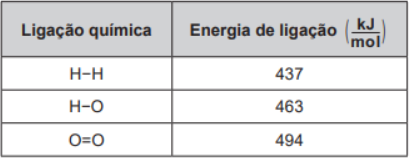
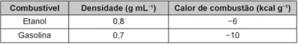
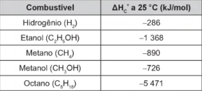
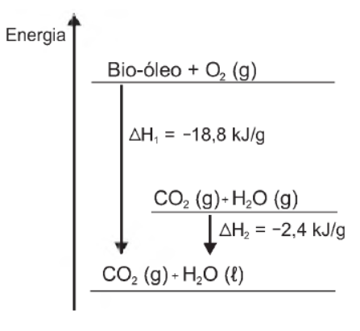
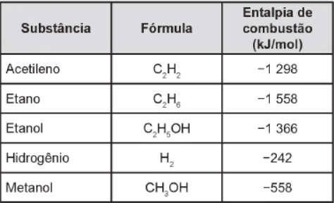
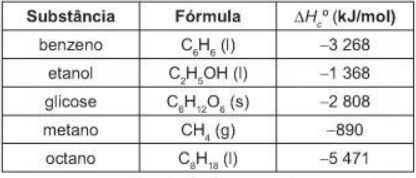

Termoquímica
Química
Exercícios:
Questão 01:
(Enem 2019) O gás hidrogênio é considerado um ótimo combustível — o único produto da combustão desse gás é o vapor de água, como mostrado na equação química.
2 H2 (g) + O2 (g) → 2 H2O (g)
Um cilindro contém 1 kg de hidrogênio e todo esse gás foi queimado. Nessa reação, são rompidas e formadas ligações químicas que envolvem as energias listadas no quadro.
Massas molares ( g/mol ): H2 = 2; O2 = 32; H2O = 18.
Qual é a variação da entalpia, em quilojoule, da reação de combustão do hidrogênio contido no cilindro?
Questão 02:
(Enem 2019) O etanol é um combustível renovável obtido da cana-de-açúcar e é menos poluente do que os combustíveis fósseis, como a gasolina e o diesel. O etanol tem densidade 0,8 g/cm3 , massa molar 46 g mol e calor de combustão aproximado de −1 300 kJ/mol. Com o grande aumento da frota de veículos, tem sido incentivada a produção de carros bicombustíveis econômicos, que são capazes de render até 20 km/L em rodovias, para diminuir a emissão de poluentes atmosféricos. O valor correspondente à energia consumida para que o motorista de um carro econômico, movido a álcool, percorra 400 km na condição de máximo rendimento é mais próximo de
Questão 03:
(Enem 2019) Glicólise é um processo que ocorre nas células, convertendo glicose em piruvato. Durante a prática de exercícios físicos que demandam grande quantidade de esforço, a glicose é completamente oxidada na presença de O2. Entretanto, em alguns casos, as células musculares podem sofrer um déficit de O2 e a glicose ser convertida em duas moléculas de ácido lático. As equações termoquímicas para a combustão da glicose e do ácido lático são, respectivamente, mostradas a seguir:
C6H12O6 (s) + 6 O2 (g) → 6 CO2 (g) + 6 H2O (l) ∆cH = −2 800 kJ
CH3CH(OH)COOH (s) + 3 O2 (g) → 3 CO2 (g) + 3 H2O (l) ∆cH = −1 344 kJ
O processo anaeróbico é menos vantajoso energeticamente porque
Questão 04:
(Enem 2018) Bebidas podem ser refrigeradas de modo mais rápido utilizando-se caixas de isopor contendo gelo e um pouco de sal grosso comercial. Nesse processo ocorre o derretimento do gelo com consequente formação de líquido e resfriamento das bebidas. Uma interpretação equivocada, baseada no senso comum, relaciona esse efeito à grande capacidade do sal grosso de remover calor do gelo.
Do ponto de vista científico, o resfriamento rápido ocorre em razão da
Questão 05:
(Enem 2018) Por meio de reações químicas que envolvem carboidratos, lipídeos e proteínas, nossas células obtêm energia e produzem gás carbônico e água. A oxidação da glicose no organismo humano libera energia, conforme ilustra a equação química, sendo que aproximadamente 40% dela é disponibilizada para atividade muscular.
C6H12O6( s ) + 6 O2 (g) → 6 CO2 (g) + 6 H2O (I) ΔcH= -2 800 kJ
Considere as massas molares (em g mol-1): H = 1; C=12; O = 16.
Na oxidação de 1,0 grama de glicose, a energia obtida para atividade muscular, em quilojoule, é mais próxima de
Questão 06:
(Enem 2018) O carro flex é uma realidade no Brasil. Estes veículos estão equipados com motor que tem a capacidade de funcionar com mais de um tipo de combustível. No entanto, as pessoas que têm esse tipo de veículo, na hora do abastecimento, têm sempre a dúvida: álcool ou gasolina? Para avaliar o consumo desses combustíveis, realizou-se um percurso com um veículo flex, consumindo 40 litros de gasolina e no percurso de volta utilizou-se etanol. Foi considerado o mesmo consumo de energia tanto no percurso de ida quanto no de volta.
O quadro resume alguns dados aproximados sobre esses combustíveis.
O volume de etanol combustível, em litro, consumido no percurso de volta é mais próximo de
Questão 07:
(Enem 2017) O ferro é encontrado na natureza na forma de seus minérios, tais como a hematita (α-Fe2 O3), a magnetita (Fe3O4) e a wustita (FeO). Na siderurgia, o ferro-gusa é obtido pela fusão de minérios de ferro em altos fornos em condições adequadas. Uma das etapas nesse processo é a formação de monóxido de carbono. O CO (gasoso) é utilizado para reduzir o FeO (sólido), conforme a equação química:
FeO (s) + CO (g) → Fe (s) + CO2(g)
Considere as seguintes equações termoquímicas:
Fe2O3 (s) + 3 CO (g) → 2 Fe (s) + 3 CO2 (g) ΔrH = -25 kJ/mol de Fe2O3
3 FeO (s) + CO2 (g) → Fe3O4 (s) + CO (g) ΔrH = -36 kJ/mol de CO2
2 Fe3O4 (s) + CO2 (g) → 3 Fe2O3 (s) + CO (g) ΔrH = +47 kJ/mol de CO2
O valor mais próximo de ΔrH , em kJ/mol de FeO, para a reação indicada do FeO (sólido) com o CO (gasoso) é
Questão 08:
(Enem 2016) A obtenção de energia por meio da fissão nuclear do 235U é muito superior quando comparada à combustão da gasolina. O calor liberado na fissão do 235U é 8 x 1010 J/g e na combustão da gasolina é 5 x 104 J/g.
A massa de gasolina necessária para obter a mesma energia na fissão de 1 kg de 235U é da ordem de
Questão 09:
(Enem 2016) Para comparar a eficiência de diferentes combustíveis, costuma-se determinar a quantidade de calor liberada na combustão por mol ou grama de combustível. O quadro mostra o valor de energia liberada na combustão completa de alguns combustíveis.
As massas molares dos elementos H, C e O são iguais a 1 g/mol, 12 g/mol e 16 g/mol, respectivamente.
Qual combustível apresenta maior liberação de energia por grama?
Questão 10:
(Enem 2016) Atualmente, soldados em campo, seja em treinamento ou em combate, podem aquecer suas refeições, prontas e embaladas em bolsas plásticas, utilizando aquecedores químicos, sem precisar fazer fogo. Dentro dessas bolsas existe magnésio metálico em pó e, quando o soldado quer aquecer a comida, ele coloca água dentro da bolsa, promovendo a reação descrita pela equação química:
Mg (s) + 2 H2O (I) → Mg(OH)2 (s) + H2 (g) + 350 kJ
O aquecimento dentro da bolsa ocorre por causa da
Questão 11:
(Enem 2016) O benzeno, um importante solvente para a indústria química, é obtido industrialmente pela destilação do petróleo. Contudo, também pode ser sintetizado pela trimerização do acetileno catalisada por ferro metálico sob altas temperaturas, conforme a equação química:
3 C2H2 (g) → C6H6 (l)
A energia envolvida nesse processo pode ser calculada indiretamente pela variação de entalpia das reações de combustão das substâncias participantes, nas mesmas condições experimentais:
I. C2H2 (g) + 5/2 O2 (g) → 2 CO2 (g) + H2O (l) ΔHc° = -310 kcal/mol
II. C6H6 (l) + 15/2 O2 (g) → 6 CO2 (g) + 3 H2O (l) ΔHc° = -780 kcal/mol
A variação de entalpia do processo de trimerização, em kcal, para a formação de um mol de benzeno é mais próxima de
Questão 12:
(Enem 2015) O aproveitamento de resíduos florestais vem se tornando cada dia mais atrativo, pois eles são uma fonte renovável de energia. A figura representa a queima de um bio-óleo extraído do resíduo de madeira, sendo ΔH1 a variação de entalpia devido à queima de 1 g desse bio-óleo, resultando em gás carbônico e água líquida, e ΔH2 a variação de entalpia envolvida na conversão de 1 g de água no estado gasoso para o estado líquido.
A variação de entalpia, em kJ, para a queima de 5 g desse bio-óleo resultando em CO2 (gasoso) e H2O (gasoso) é:
Questão 13:
(Enem 2014) A escolha de uma determinada substância para ser utilizada como combustível passa pela análise da poluição que ela causa ao ambiente e pela quantidade de energia liberada em sua combustão completa. O quadro apresenta a entalpia de combustão de algumas substâncias. As massas molares dos elementos H, C e O são, respectivamente, iguais a 1 g/mol, 12 g/mol e 16 g/mol.
Levando-se em conta somente o aspecto energético, a substância mais eficiente para a obtenção de energia, na combustão de 1 kg de combustível, é o
Questão 14:
(Enem 2011) Um dos problemas dos combustíveis que contêm carbono é que sua queima produz dióxido de carbono. Portanto, uma característica importante, ao se escolher um combustível, é analisar seu calor de combustão (∆Hoc), definido como a energia liberada na queima completa de um mol de combustível no estado padrão. O quadro seguinte relaciona algumas substâncias que contêm carbono e seu (∆Hoc).
Neste contexto, qual dos combustíveis, quando queimado completamente, libera mais dióxido de carbono no ambiente pela mesma quantidade de energia produzida?